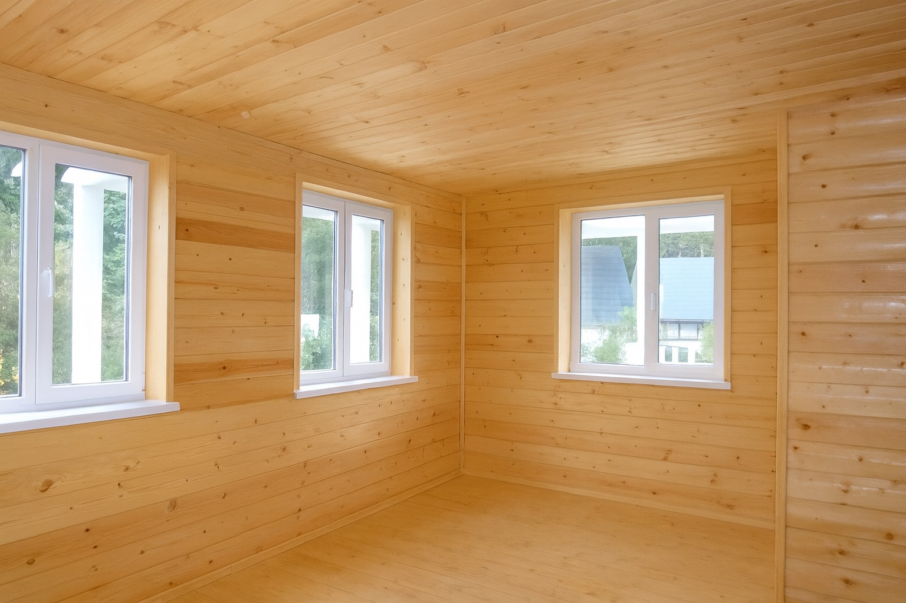

Gartenbüro im Container: Dämmung, Technik und Planung in Zürich
Ein Seecontainer lässt sich erstaunlich gut zu einem kleinen, komfortablen Gartenbüro umbauen. Stabil, wetterfest und schnell aufgebaut – ideal für Homeoffice, Atelier oder Werkstattfläche. Entscheidend für ein gutes Raumklima ist jedoch der richtige Innenaufbau mit Dämmung, Dampfsperre, Technik und einer sauberen Ausführung. Hier zeigen wir, worauf man achten muss.

1. Warum ein Container als Gartenbüro?
Container sind robust, schnell verfügbar und lassen sich modular erweitern. Für ein Gartenbüro sind besonders folgende Vorteile entscheidend:
- stabile Stahlkonstruktion – langlebig und wetterfest
- kurze Montagezeit – ideal auf kleinen Grundstücken
- flexibler Innenausbau – Dämmung, Fenster, Elektro, Heizung
- kostengünstig im Vergleich zu klassischen Gartenhäusern
2. Fenster, Türen und Grundriss planen
Ein Container wirkt ohne Öffnungen dunkel und eng. Daher planen wir zuerst:
- grosse Fensterflächen auf der Sonnenseite
- eine breite Eingangstür oder Hebeschiebetür
- Standort der Elektroinstallation (Schreibtisch, Computer, Licht)
Wichtig: Containerwände tragen mit. Öffnungen müssen mit Stahlrahmen verstärkt werden.
3. Dämmung: der wichtigste Schritt für Komfort
Ohne Dämmung wird ein Container im Sommer zu warm und im Winter zu kalt. In Zürich hat sich folgender Schichtaufbau bewährt:
3.1 Wand- und Deckendämmung
- Holz- oder Metallständer an den Containerwänden montieren
- Mineralwolle oder PIR/PUR-Platten einlegen
- Dampfsperre sorgfältig verkleben
- Innenbekleidung: OSB + Gips oder direkt Gipsfaserplatten
3.2 Bodendämmung
Der Containerboden besteht aus Stahlrahmen + Holzplatten. Für ein Büro empfehlen wir eine zusätzliche Dämmung:
- Holzunterkonstruktion
- Zwischendämmung
- OSB und Bodenbelag (Vinyl, Laminat, Holz)
4. Elektro, Heizung und Lüftung
Für ein komfortables Arbeiten empfehlen wir:
- mehrere Steckdosenkreise
- Heizung: Elektroheizkörper, Infrarot oder kleine Split-Klimaanlage
- LED-Beleuchtung mit warmem Licht
- optionale Lüftung gegen Feuchtigkeit
5. Was macht ein Containerbüro in Zürich besonders?
Im Kanton Zürich gelten teilweise spezifische Vorschriften zu Standorten, Abständen, Brandabschottung und Energie. Wir beraten Kunden individuell und planen die passende Konstruktion zum Grundstück und zur Nutzung.
6. Fazit: Schnell gebaut, komfortabel genutzt
Ein Seecontainer eignet sich hervorragend als kleines Büro oder Atelier. Entscheidend ist die richtige Dämmung sowie eine saubere technische Umsetzung. Mit guter Planung wird aus einem einfachen Container ein angenehmer Arbeitsraum.